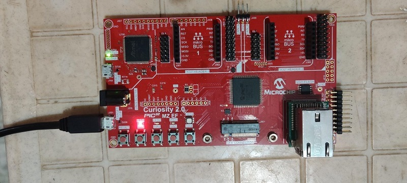
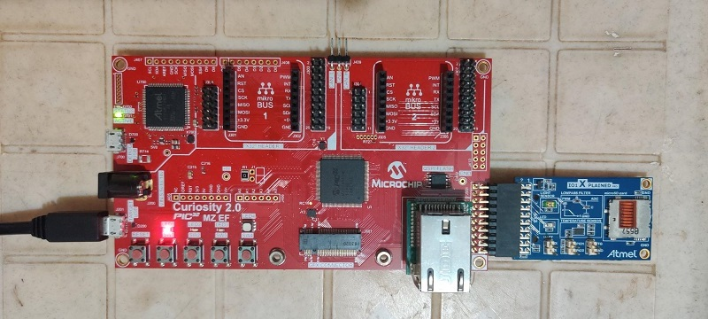

Getting Started Extended Application on Curiosity PIC32MZ EF 2.0 Development Board
Description
This application demonstrates an LED toggle (LED1 toggles when the switch SW1 is pressed and LED3 toggles when switch SW3 is pressed) on a timeout basis and print the LED toggling rate on the serial terminal. The periodicity of the timeout will change from 500 milliseconds to one second, two seconds, four seconds, and back to 500 milliseconds every time you press the switch SW1 or SW3 on the Curiosity PIC32MZ EF 2.0 Development Board. The periodicity will not change while switching between SW1 to SW3 or vice versa.
The demo application has extended functionality to print the current room temperature periodically when the XPRO connector is plugged with I/O1 Xplained Pro Extension Kit.
Modules/Technology Used:
Hardware Used:
This project has been verified to work with the following versions of software tools:
Refer Project Manifest present in harmony-manifest-success.yml under the project folder firmware/src/config/pic32mz_ef_curiosity_v2
- Refer the Release Notes to know the MPLAB X IDE and MCC Plugin version. Alternatively, Click Here.
- Any Serial Terminal application like Tera Term terminal application.
Because Microchip regularly update tools, occasionally issue(s) could be discovered while using the newer versions of the tools. If the project doesn’t seem to work and version incompatibility is suspected, It is recommended to double-check and use the same versions that the project was tested with. To download original version of MPLAB Harmony v3 packages, refer to document How to Use the MPLAB Harmony v3 Project Manifest Feature
Setup 1:
- Connect the Curiosity PIC32MZ EF 2.0 Development Board to the Host PC as a USB Device through a Type-A male to micro-B USB cable connected to Micro-B USB (Debug USB) port 
Setup 2:
- Connect the Curiosity PIC32MZ EF 2.0 Development Board to the Host PC as a USB Device through a Type-A male to micro-B USB cable connected to Micro-B USB (Debug USB) port
- To test the extended functionality, connect the I/O1 Xplained Pro Extension Kit (Temperature Sensor) to J501 (Extension Header 1 (EXT1)) on the Curiosity PIC32MZ EF 2.0 Development Board 
Programming hex file:
The pre-built hex file can be programmed by following the below steps
Steps to program the hex file
- Open MPLAB X IDE
- Close all existing projects in IDE, if any project is opened.
- Go to File -> Import -> Hex/ELF File
- In the “Import Image File” window, Step 1 - Create Prebuilt Project, click the “Browse” button to select the prebuilt hex file.
- Select Device has “PIC32MZ2048EFM144”
- Ensure the proper tool is selected under “Hardware Tool”
- Click on “Next” button
- In the “Import Image File” window, Step 2 - Select Project Name and Folder, select appropriate project name and folder
- Click on “Finish” button
- In MPLAB X IDE, click on “Make and Program Device” Button. The device gets programmed in sometime.
- Follow the steps in “Running the Demo” section below
Programming/Debugging Application Project:
- Open the project (getting_started_ext32mz_ef_curiosity_v2.X) in MPLAB X IDE
- Ensure “Curiosity/Starter Kits (PKOB4)” is selected as hardware tool to program/debug the application
- Build the code and program the device by clicking on the “Make and Program Device” button in MPLAB X IDE tool bar
- Follow the steps in “Running the Demo” section below
Running the Demo:
- Open the Tera Term terminal application on your PC (from the Windows® Start menu by pressing the Start button).
- Set the baud rate to 115200.
- Reset or power cycle the device.
- An LED (LED1) on the Curiosity PIC32MZ EF 2.0 Development Board toggles on every timeout basis and the default periodicity of the timeout is 500 milliseconds.
- And also, the LED toggling rate is displayed on the serial terminal.
- Press the switch SW1 on the Curiosity PIC32MZ EF 2.0 Development Board to change the periodicity of the timeout to one second.
- Every subsequent pressing of the switch SW1 on the Curiosity PIC32MZ EF 2.0 Development Board changes the periodicity of the timeout to 2 seconds, 4 seconds, 500 milliseconds, and back to 1 second in cyclic order.
- Press the switch SW3 on the Curiosity PIC32MZ EF 2.0 Development Board to switch the toggling LED from LED1 to LED3.
- Every subsequent pressing of the switch SW3 on the Curiosity PIC32MZ EF 2.0 Development Board changes the periodicity of the timeout to 2 seconds, 4 seconds, 500 milliseconds, and back to 1 second in cyclic order.
- Press the switch SW1 on the Curiosity PIC32MZ EF 2.0 Development Board to switch back the toggling LED from LED3 to LED1.
- Testing Extended functionality:
- Press the switch SW2 on the Curiosity PIC32MZ EF 2.0 Development Board to read and print the Temperature from the Temperature Sensor.
- The temperature read is displayed on a serial console on a periodical basis.
- Press the switch SW1 (toggles LED1) on the Curiosity PIC32MZ EF 2.0 Development Board to change the periodicity of the temperature values displayed on the serial console. The periodicity will be changed between 500 milliseconds, one second, two seconds, four seconds and back to 500 milliseconds every time the user presses the switch SW1 on the Curiosity PIC32MZ EF 2.0 Development Board.
- Press the switch SW3 (toggles LED3) on the Curiosity PIC32MZ EF 2.0 Development Board to change the periodicity of the temperature values displayed on the serial console. The periodicity will be changed between 500 milliseconds, one second, two seconds, four seconds and back to 500 milliseconds every time the user presses the switch SW3 on the Curiosity PIC32MZ EF 2.0 Development Board.
- Note:
- The LED1 toggles for every 500 milliseconds during power cycle.
- The periodicity will not change while switching between SW1 to SW3 or vice versa.
- Reference Training Module: Getting Started with Harmony v3 Peripheral Libraries on PIC32MZ EF MCUs
- This application demo builds and works out of box by following the instructions above in “Running the Demo” section. If you need to enhance/customize this application demo, you need to use the MPLAB Harmony v3 Software framework. Refer links below to setup and build your applications using MPLAB Harmony.
Revision:
- v1.5.0 - Removed MHC support, regenerated and tested application.
- v1.4.0 - Extended functionality to toggle LED3 on SW3 switch press, added MCC support, regenerated and tested application.
- v1.3.0 - Regenerated and tested application.
- v1.2.0 - Regenerated and tested application.
- v1.1.0 - Regenerated and tested application.
- v1.0.0 - Released demo application